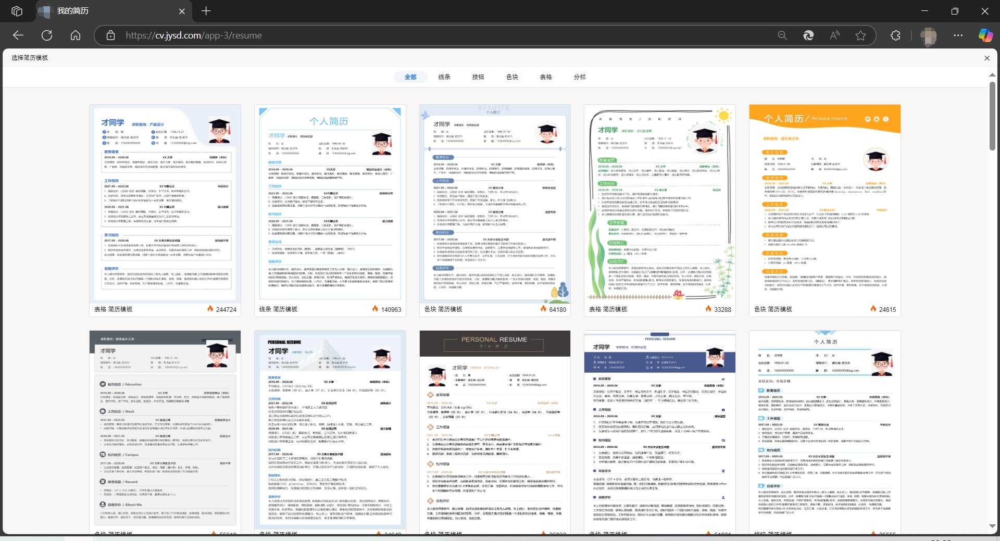
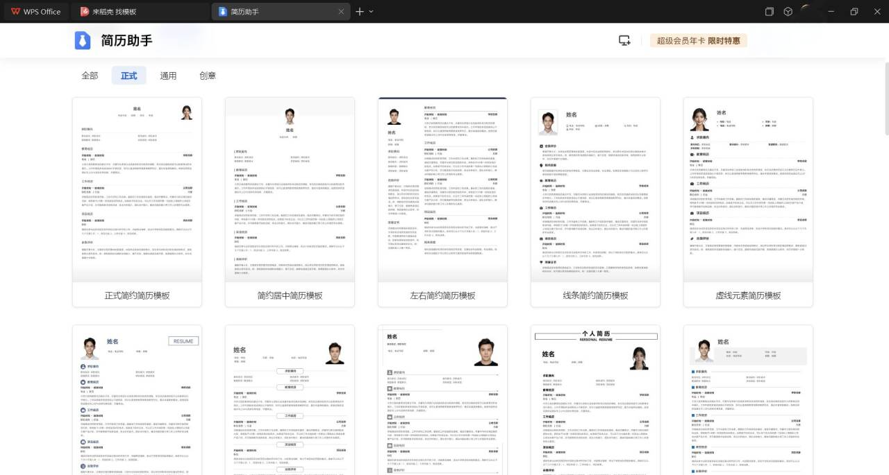

2026届夏令营/预推免材料保研文书详细内容（五）—保研简历制作
Hello大家好，我是呜呜，本篇来分享我们准备夏令营、预推免的面试经验，希望对你有所帮助，如有帮助记得三连博主（点赞+关注+收藏），如有疑问也可以私信或者评论区进行提问!本期主要介绍保研简历的制作的注意事项。
温馨提示：本攻略可以在电脑端，鼠标右键单击选择打印（或者同时按Crtl+P），输出为PDF格式保存，本网页已经完成了打印适配！
一、简历的重要性
简历是保研过程中我们需要重点打磨的内容，我们面试时候，下面的评委老师一般拿着我们的简历，根据上面的核心课程和项目经历进行提问，如果自己简历上写的内容被老师提问到非常的不熟悉、或者“一问三不知”，就会给老师产生很差的印象，大大降低印象分。
此外，如果你简历上写的某个项目刚好和某个老师的研究方向比较契合，老师就会对项目比较感兴趣，会把提问的重点放在这个项目上。例如：你参加过数学建模竞赛，对数学的算法有一定了解，而老师也研究机器学习、人工智能算法等方向，那么老师就会以这个项目为切入口进行提问。
因此，一份好的简历应该充分挖掘我们大学前三年的项目经历和个人优点，向老师“推销”自己。
二、简历应包括哪些内容
1.基本信息：姓名、政治面貌（如果是党员的话）、邮箱号（推荐163邮箱或者edu邮箱）和手机号。
2.本科学习信息：学校名称、所学专业、专业排名和GPA（加权平均成绩）、专业核心课程和分数、四六级（雅思）成绩。
3.科研经历信息（详细的写）：可以是和本科老师一起开展的科研项目、可以是大学生创新创业训练项目、也可以是参加的数模、美赛、电赛或工创赛等。
4.学生工作信息（简要的写）：自己参加志愿、班委等工作，由于是保研面试，这些不是最关键的，重点还是放在上面的科研经历信息，这部分简要写一下，侧面反映自己是相对全面发展的，而不是“只会学习”即可。
5.主要获奖信息：列出一些具有代表性的奖项，例如：国家级奖学金、校一等奖学金、校优秀学生等。
三、简历书写的注意事项
1.简历内容是一页A4纸，重点突出自己的科研能力。
2.建议简历不要超过2种颜色，字体的大小和间距合适，一般在小四或者五号字体，段落间距根据情况适当调整。
3.在写自己项目经历时候按照“项目介绍+自己做了什么内容+取得了什么成果”，三部分的思路来写，尽可能用数字量化成果。
4.充分挖掘经历：你可能会发现自己没什么可以写的，可以回忆一下是否某些课设、实践可以进行包装，但注意不要过度包装。
5.写上去的一定是熟悉的项目：不熟悉的项目不推荐写，否则老师问到细节，答不出就很尴尬。
6.简历一定花足够的时间进行打磨，不要草草的就写完不管了！
四、简历模板
小红书平台有很多其他优秀的博主，发布了一些模板，具体可以进行参考
此外简历模板还可以通过两种方法查找：
1.学校的就业信息网：部分学校开发了“简历实验室”功能，里面会存放一些简历模板，可以对着大概改一改，如下图所示：

2.WPS Office自带的简历模板功能（可能需要会员，有时候学校也开通了企业会员可以免费试用，也可以探索一下），这里有一些简历的框架也可以参考，也可以对照改一改，如下图所示：
